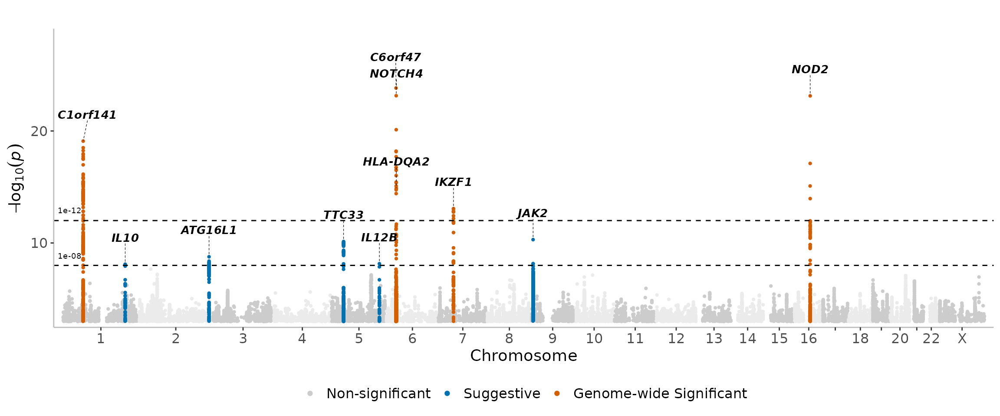

Extending manhattan plots with manhattanExtra
Source:vignettes/articles/manhattanExtra.Rmd
manhattanExtra.RmdWhen using the regular manhattan function, the user can
specify a P-value threshold to highlight significant associations.
However, sometimes it is useful to highlight variants using both a
genome-wide significant threshold and a suggestive threshold. A good use
case for this could be an under powered study with a small sample size.
The manhattanExtra extension of manhattan
allows the user to easily do this.
There are no additional required arguments for this function, as shown below.
manhattanExtra(CD_UKBB)The manhattanExtra function can be customized using some
of its optional arguments, including genome_wide_thresh,
suggestive_thresh, flank_size &
region_size. The flank_size parameter is used
to denote the size on either side of a top hit that will be included in
the colored grouping for that hit. The region_size
parameter is used for gene annotation and will determine how dense the
labeling is. Larger numbers will have sparser annotations.
Adjusting flank and region sizes -
manhattanExtra(
CD_UKBB,
flank_size = 1e6,
region_size = 1e6
)
manhattanExtra(
CD_UKBB,
flank_size = 1e6,
region_size = 1e8
)
For arguments sake, we can make the thresholds much stricter to see the results -
manhattanExtra(
CD_UKBB,
genome_wide_thresh = 1e-12,
suggestive_thresh = 1e-8
)
manhattanExtra(
CD_UKBB,
genome_wide_thresh = 1e-12,
suggestive_thresh = 1e-8,
flank_size = 1e6,
region_size = 1e8
)